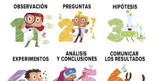

|  | |
| ¿QUÉ ES EL METODO CIENTIFICO? | |
La investigación acerca a la humanidad a la realidad y constituye un estímulo para la actividad intelectual. Es fundamental que los investigadores de cualquier campo conozcan qué es el método científico, ya que este los ayuda a solucionar problemas, comprobar hechos y generar conocimiento considerado válido. El uso de esta metodología es vital para la ciencia en general ya que ha facilitado todos los avances que se han dado en cada uno de los campos científicos, los cuales han conformado la sociedad actual. Sin su utilización, México y el mundo serían lugares muy diferentes. El método científico es una herramienta de investigación que permite generar conocimiento objetivo al resolver la veracidad o falsedad de un postulado por medio de la aplicación de una serie de etapas o pasos. Constituye una forma estructurada y sistemática de afrontar una duda. Su propósito es convertir una verdad subjetiva en objetiva, gracias a que se prueban y comprueban los hechos con la finalidad de mostrar su existencia real. Este sistema faculta al investigador para que se aproxime a la realidad de forma independiente a sus creencias. Los pasos del método científico únicamente buscan descubrir el funcionamiento del universo o algún hecho concreto, basándose en el estudio y la evidencia disponible. Características del método científicoEsta herramienta científica cuenta con algunas de las particularidades, como el ser:
|
|